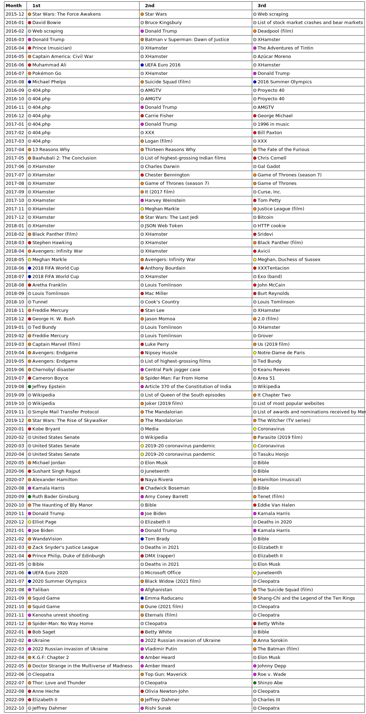

Final project
Nathan Holmes-King
This project is about viewership of Wikipedia. All data is sourced from https://stats.wikimedia.org.
Alpha release report
Back to main page
Visualization 1
VizHub link
Visualizations 2 & 3
VizHub link
Visualization 4
This chart shows the three most-viewed individual English Wikipedia pages for a given month, color-coded by the reason that they were most-viewed.
Legend:
- Red: famous person's death
- Orange: release of media/entertainment
- Blue: sports event
- Magenta: political, legal, or military event
- Yellow: other event
- Green: multiple reasons
- Gray: unknown
BETA RELEASE: When each item is hovered over, more information about it will be displayed.

Potential shortcomings:
- Obviously, since this is the English Wikipedia, it will be biased towards English-speaking countries.
- For events that happened in the last few days of the month, the views will be split across two months, and will add up to less.
- This data only tracks views for a certain pagename, so pages that were renamed several times will not appear, as the views will be split between the different names.